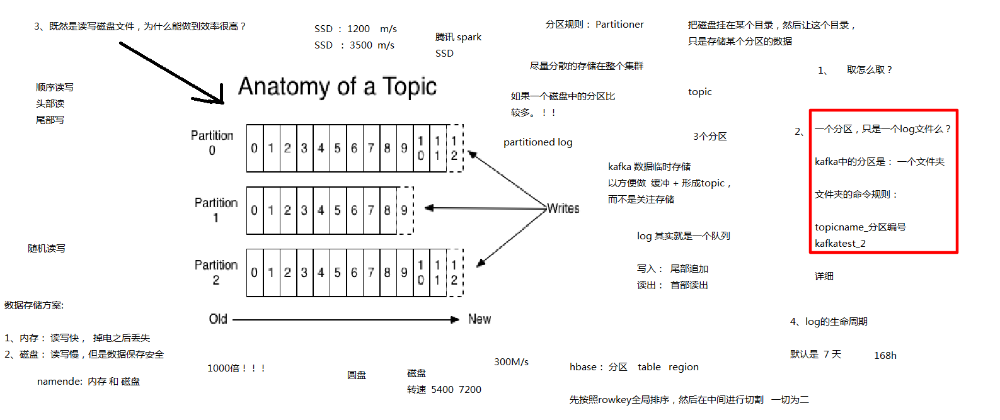

消息的共享 有哪些方式？
1、内存共享 (如在同一台主机上的消息共享)
内存共享时, 要特别注意数据的一致性问题, 尤其是分布式场景下
在分布式场景中，就是用zookeeper来解决数据的一致性问题的, zookeeper就是公告栏, hbase hive hdfs 就是一个实例
zookeeper 解决这个数据一致性的思路： NW思路
写数据时, 最少写成功多少份?节点数的一半以上！才算成功。(没写成功的先将他们剔除服务范围?等他们写成功了或者有响应了才继续服务?)
读数据时, 如果是原先的方法, 要保证访问的数据为最新的数据, 那么需要访问至少半数节点！后来zookeeper有一改进：查询，读取数据, 只需要读取一个节点即可！！ 如果某个节点同步数据不成功，那么leader就把它剔除服务范围。也就是说所有正在服务的节点的数据都是最新的。
从这可以体现zookeeper的生命力非常的强 没有单点故障问题(可以存在多点故障)，宕机部分节点也可以运行：不超过半数即可！
基于消息传递的一个paxos算法！！！
2、消息传递 如一台主机把一条消息发送给另一台主机
消息传递的方式有哪些？主动送还和自己来取
hadoop02 ------> hadoop05
hadoop02主动发送数据给hadoop05 send (push)
hadoop05自己到hadoop02上进行拉取 fetch (pull)
消息队列：
BlockingQueue
两队方法：
阻塞的方法：put take 死等
非阻塞方法：add poll 等待的时候干别的事
kafka

kafka中的几种角色:
producer: 生产者
consumer: 消费者
broker: 集群中的一个节点
topic : 主题。一种类型的消息。 例如 page view 日志、 click 日志等不同的日志可以不同的 topic的形式存在。
Partition: 分区。 一个主题可以有多个分区, 这些分区可以分布在不同的broker。一个partition是一个文件夹, 里面有多个log文件(log文件一般也不会放在一个文件里存储所有log)
consumer group : 消费者组。给消费者分组, 一个组里有多个消费者。一个topic可以有不同的消费者组去消费, 但是相同组里的消费者不会消费同一个topic的消息。

segment: 一个segment其实就是一个partition里的一个log文件。其实就是将一个partition分成一段一段的, 每一段就是一个segment, 类似于jdk 1.7中的 ConcurrentHashMap中的segment。
zookeeper会管理每个broker(集群节点), 同时还会管理所有的consumer。
kafka在集群里运行的时候会在每个节点运行一个守护进程, 这个守护进程就叫做kafka。


如果想提高并发读写的能力, 可以提高分区数, kafka的分区是随时可以调的, kafka的每个分区都有对应的冗余数， 默认是1， 每个分区如果有多个副本
那么这些副本中，其中会有一个是 active的状态。负责读写
其他的都是standby的状态
HDFS的block 和kafka的partition 对于不同的文件或者topic来说，都可以有不同的副本数, 也就是说可以单独指定某文件要存储多少份副本, 不是都一定是相同的副本数
kafka的partition设置的副本数不能超过broker的数量, hdfs里的block也一样, 设置超过了集群节点的数量的话, 最多也只会每个节点保存一份, 不可能有某个节点保存两份。
怎么让所有的消费者都只消费某个topic当中的一部分数据？
将所有消费者放置在同一个CG中, 并且订阅这个topic。！！ (组播)
怎么让所有的消费者都消费某个topic当中的所有数据？
所有的C(consumer)都作为一个独立的CG, 并且订阅这个topic。 (广播)
为什么要consumer要分组(consumer group 为啥要存在)?
如果一个consumer对于任何一个topic都只启动一个实例(线程)，就能完整消费。那么就没有必要出现组的概念, 正是因为在分布式的环境下, 一个cosumer在消费的时候，可能力不能及，所以需要启动多个实例, 所以有了consumer group 和组里的多个consumer。如果启动了多个实例，那么每个实例必然都只是消费这个topic中的一部分数据, 所以topic分了区(partition)。
消费的任务： 原来就是一个consumer消费topic,但是现在是一个组，这个组中会有一堆consumer一起消费同一个topic。
熟习了部门的业务、熟悉了git等工具的使用
解决LeetCode编程题50多道
实习期间主要完成DT框架重构:
1、库切换, 将32位依赖库切换为64位。具体的做法是由32位依赖库去cmc上找同名的64位依赖库进行替换。
2、修改CMakeLists编译链接参数, 重新整理规划CMake编译的组织。
3、解决用例+主机侧代码编译问题。
主要是通过编译是出现的变量未定义和重复定义等报错信息来解决。
未定义解决方案:比如将用例会使用到但没编译的主机侧或当前llt目录下的模块包含进来。
重复定义解决方案:判断冲突原因并删除不合理或无效定义。
4、调试用例。解决调试问题, 寻找与测试用例预期结果不一致的原因。比如:
(1)是测试的模块的驱动未加载、未初始化, 还是测试用例本身的问题导致运行了错误的代码分支(如多个测试文件都使用了同一些全局变量后未重置其值, 导致单个测试文件能跑通, 多个测试文件一起跑出现问题)。
(2)32位切64位的特有的地址填充问题解决。